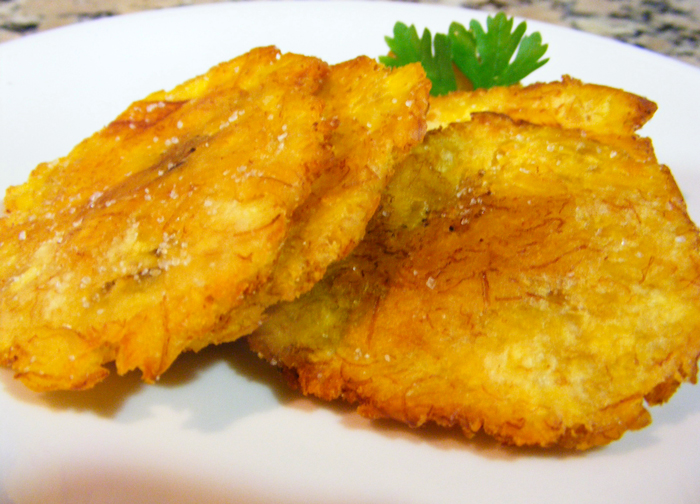
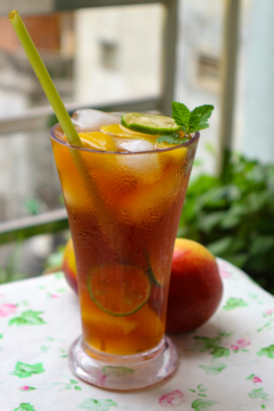

Side Dishes
The Best Companionship to any Meal
Tostones
Simply put, Tostones are salted plantains chips that originated in the west of Venezuela. They can be found all over the country as side dishes or appetizers, and there are even brands that sell tostones like any other chips in stores. Tostones are often used as crackers to pick up other parts of a dish, like shredded beef, cheese, and more.
Yield: ~10 tostones (depending on the size of the plantain)
Prep time: 20 minutes
- 1 green or unripe plantain.
- 1 ½ cups (or enough for frying) cups of cooking oil
- 1 cup of water
- 3 garlic cloves thinly diced or crushed
- Salt to taste
First, add the oil to a pan and set it to a high temperature. Cut the top and bottom tips of the plantain, and then cut a slit from the top to the bottom through the skin and peel it with your hands to reveal the pulp. Unripe plantain skin is very tough to peel so you might need to help yourself with a knife.
Once you've got only the pulp, cut it into 3 cm thick slices (or a little larger than an inch) and fry them for about two minutes on each side. Once they're yellow, remove them from the heat (don't turn it off yet!) and lay them on paper towels to soak up the excess oil. Using a wooden press or any flat surface, gently flatten the tostones, leaving them about a centimeter thick.
Mix the garlic and salt with the water in a bowl that you will then dip your tostones in to give them that salty, garlicky flavor. Flick off some of the water and place them back into the pan to fry until golden and crispy on both sides.
Sprinkle some salt on top and serve!
Papelón con Limón
Although technically not a dish, papelón con limón is a refreshing beverage that is the best ally against that Caribbean hot weather that Venezuela is known for. It Is made with papelón or panela, which is hardened sugar cane in the form of a block and used in many other traditional recipes.
Yield: 6 cups
Prep time: The papelón must be left overnight to soak, but the active prep time is less than 5 minutes.
- 150 grams or 5 oz. of papelón, or panela.
- 1 ¼ of fresh lemon juice
- 6 cups of water
- Lots of ice!
The preparation of papelón con limón varies from person to person. Some people like to shred the papelón and boil it, or even buy it already melted down, but the way that my mom taught me (the best way) consists of leaving the block of papelón soaking in the water overnight to break it down.
Pour the 6 cups of water into a jug or pitcher and drop in the papelón. Cover it with a lid and let it sit for around 8 hours, or until the papelón fully dissolves. Once it is done, filter it with a thin strainer to make sure it's all dissolved in the water. Then, add in the lemon juice and stir.
Serve with lots of ice, and enjoy!